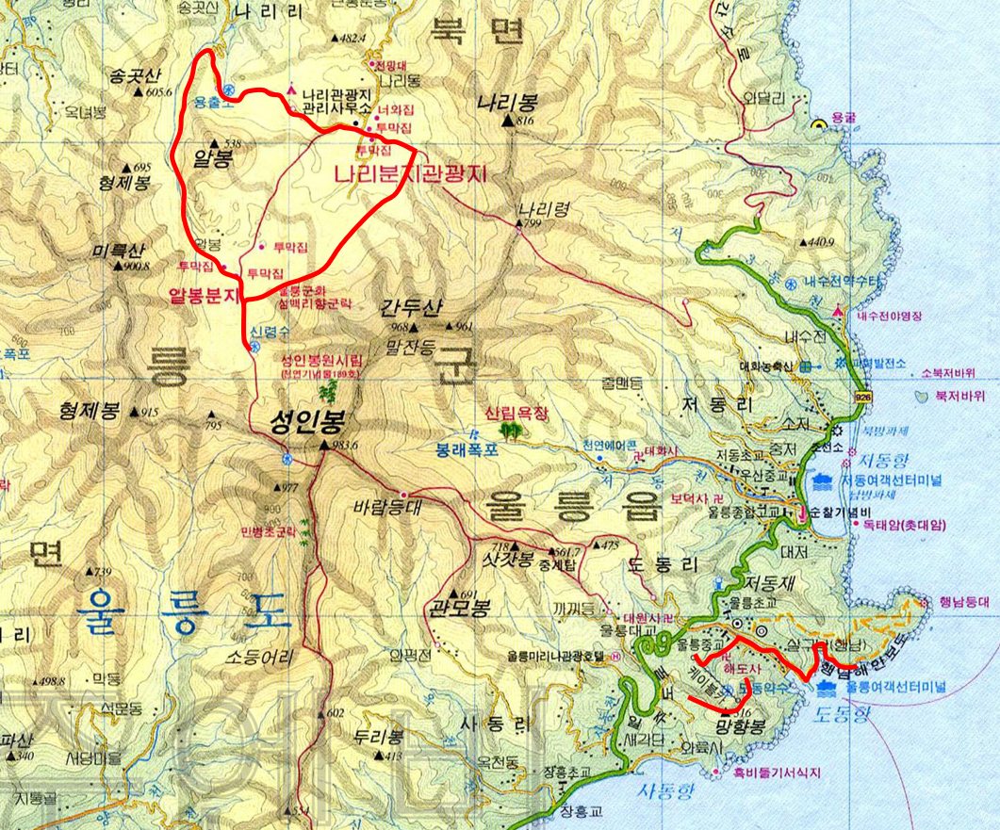
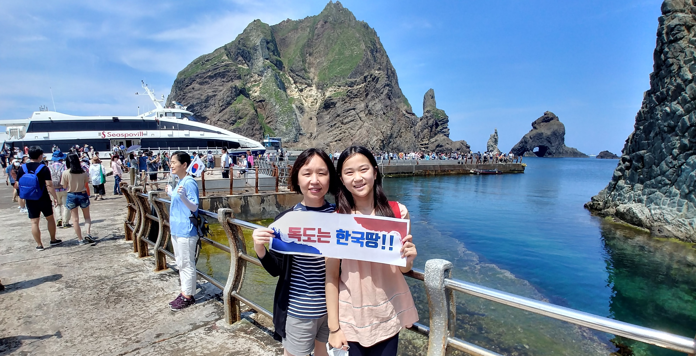
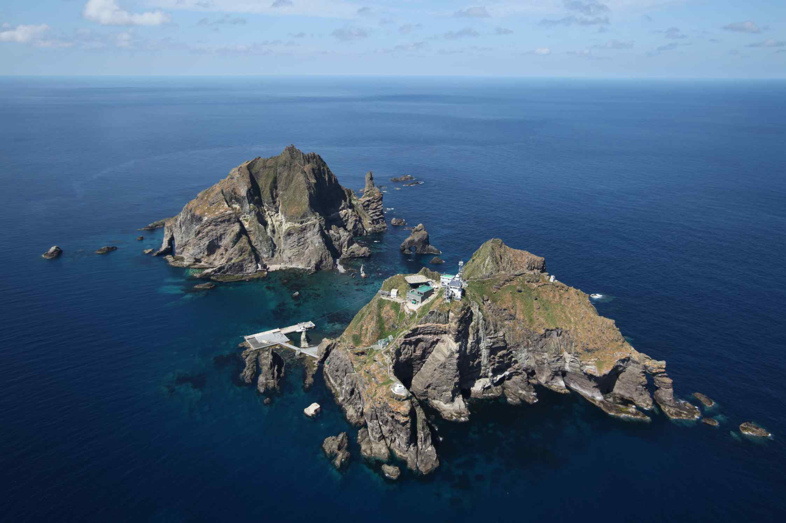
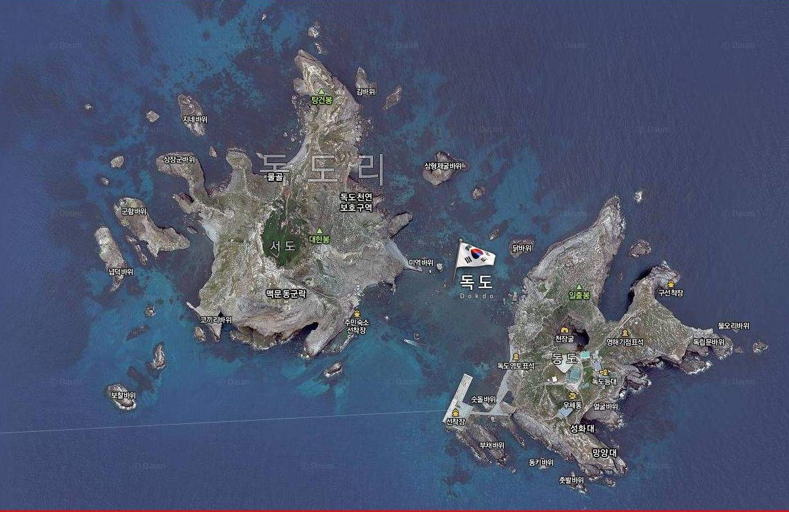
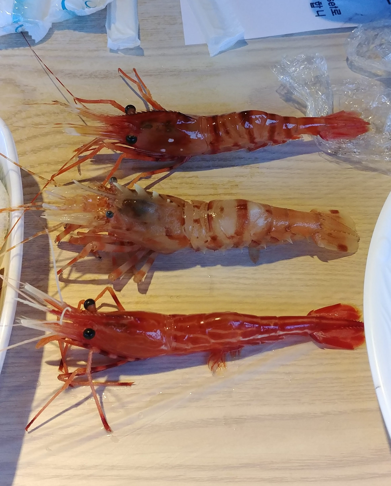
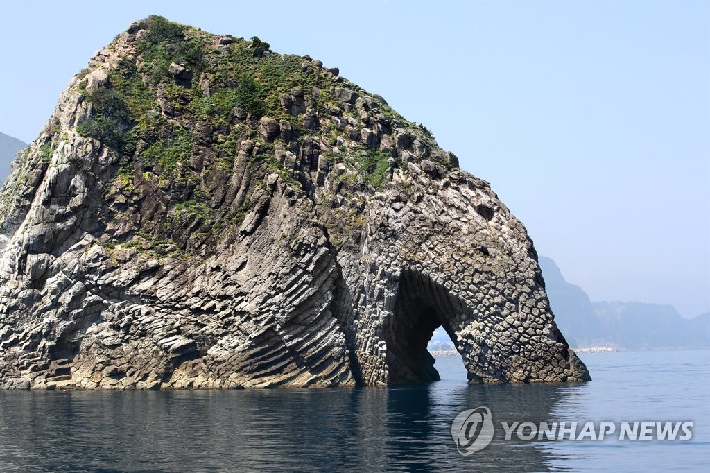
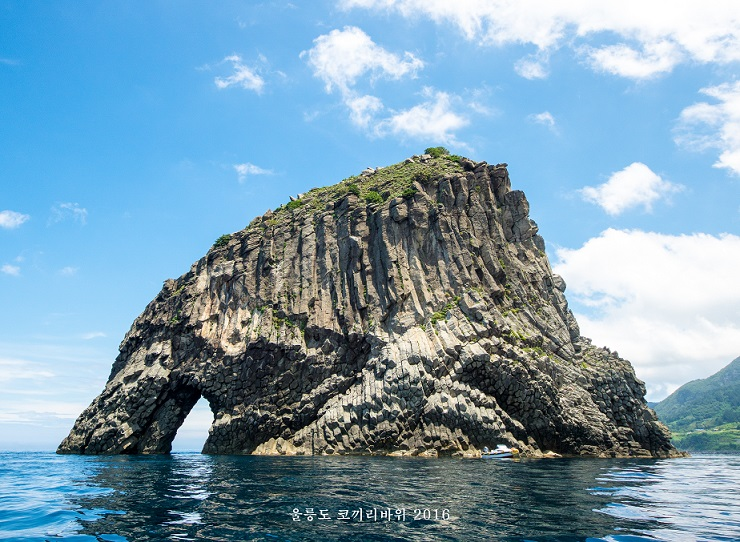
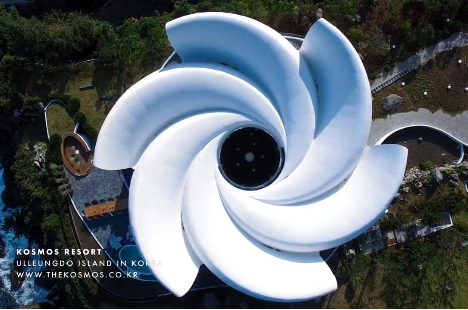
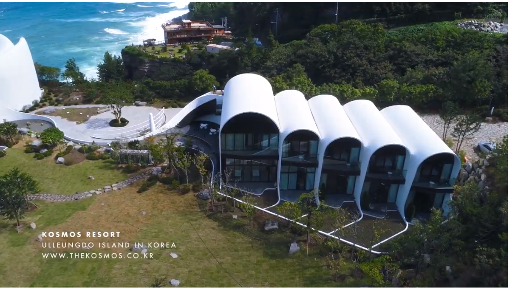
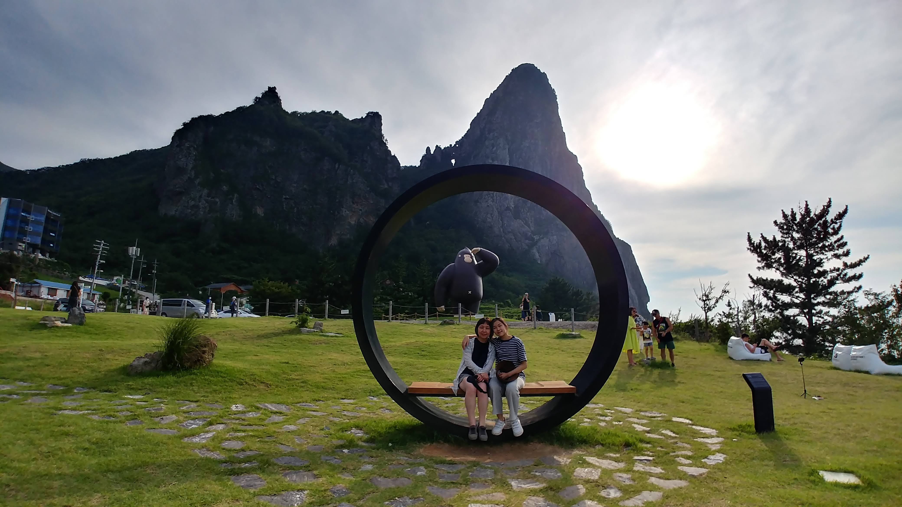

경상북도 울릉도
|  |
| 2020년 08월 16일 |
평창 효석 달빛 언덕, 이효석 생가, 이효석 문학관, 강릉 버드나무 브루어리, 세이트존스 호텔 |
| 08월 17일 | 울릉도 (3시간 5분), 나리분지 산마을 식당, 나리분지 버스정류장, 신령수, 투막집, 메밀밭, 출렁다리(깃대봉 갈림길), 용출소, 나리관광지 관리사무소 송곳봉, 울라-울릉도 고릴라, 코스모스 링, 코스모스 리조트 카페, 코끼리바위, 저동 명가 식당, 라페루즈 리조트 |
| 08월 18일 | 독도 동도 접안, 울야-울라 야식당, 태하 성하신당-성황당, 태하 향목 모노레일, 대풍감 전망대, 태하 등대, 저동 천금수산 독도 새우 |
| 08월 19일 |
저동항, 강릉항(3시간 5분) |
느낀 점, 배운 것
- 1년에 40일만 접안할 수 있다는 독도 땅을 밟을 수 있어 기쁘다.
- 독도는 매우 크고, 아름답고, 멋지고, 다양한 기암괴석이 있는 신비의 섬이다.
- 울릉도는 매우 큰 하나의 화산이다. 해저 2200m 성인봉 983m인 것을 고려하면 약 3000m 높이로 백두산보다도 큰 화산이다.
- 섬 전체의 지형이 급경사를 이루고 있으며 산세가 매우 험하다. 매년 약초를 캐다 10 여명이 사망한다고 한다.
- 신묘한 주상절리의 모습을 보여주는 코끼리 바위는 정말 멋있다. 배를 타고 가까이 가거나 쌍안경으로 봐야한다.
- 관련 블로그/영상
나리 분지, 알봉 둘레길
신령수 물맛 좋다. 족욕탕은 물이 정말 차다. 모기도 많다.투막집에서 메밀밭, 출렁 다리로 이어지는 길이 정말 예쁘다.
알봉 둘레길에 대한 설명이 별로 없다...
메밀밭 근처에서 알봉을 올라 반대편으로 내려 오는 코스가 더 좋아 보인다.
둘레길 전체는 너무 길고, 출렁 다리 이후 급경사 내리막길이고, 용출소~관리사무소는 보도블럭 오르막길로 힘들다.
태하 대풍감, 태하 등대
한국사진가협회 선청 10대 비경 중 하나이다.어안 렌즈 또는 파노라마로 찍어야 한 장의 사진에 담긴다.
배가 바람이 불기를 기다리는 곳이라는 뜻이다.
쪽빛 바다와 파란 하늘, 넓찍한 대접 모양의 해안, 세로로 세워진 주상 절리, 태하 등대, ... 모두 절경이다. 멀리 보이는 코끼리 바위와 송곳봉과 겹쳐 보이는 산들이 아름다움을 배가 시킨다.
| 광각렌즈로 찍은 두 사진을 이어야 전체 모습이 보인다. | |
기상대-독도 전망대 산책길
다만, 전선줄 등이 어지럽게 보이는 것은 아쉽다.
독도 전망대는 바다와 내륙을 모두 조망할 수 있는 멋진 곳이다. 도동의 모습이 개미집처럼 보여 재미있다.
기상청까지는 택시로 이동해야 하고, 내려올 때는 케이블카를 이용하여 독도 박물관으로 가면 좋을 것 같다. (케이블카 미운행 시 기상청으로 회귀하면 된다)
| 중앙에 성인봉, 독도박물관이 보이고, 우측으로 도동과 독도 방향 표시기가 있다. |
독도
푸른 바다 한 가운데 우똑 솟은 독도는 생각보다 매우 크다.동도/서도 두개의 섬과 수 많은 기암괴석은 쪽빛 바다와 어우러져 비경을 만들어 낸다. 우리 나라 최고의 경치가 아닐까 싶다.
일년 중 파도가 없는 40여 일만 접안이 가능하다는 말이 있다.
1시간 40분이면 독도에 도착한다. 하루 4~6편 배가 운항하며, 천 여명의 관광객이 가는 것으로 추측된다.
독도 수비대에 위문품을 전달할 수 있다.
|  | ||

|
 |  |
| 맑은 바닷물, 주상절리 등 기암괴석, 멋진 바위산 모두가 절경이다. | ||
독도 새우

세 가지 새우를 가리킨다.- 도화새우: 독도새우 3종 중 가장 크고 귀하다. 머리 부근의 흰 점박이 복숭아 꽃 무늬 같다고 하여 붙여진 이름이다.
- 닭새우: 머리에 닭벼슬을 닮은 뿔이 나 있어 닭새우라는 이름으로 불린다.
- 꽃새우: 전체적으로 붉은 빛이 감돌고 옆으로 불규칙한 흰 줄무늬가 있어 예쁜 모습이다. 새우깡의 모델이라는 이야기가 있으나 이는 잘못된 것이다.
코끼리 바위 (공암)
코끼리 코 모양도 신기하지만, 각기 다른 형태로 형성된 주상절리가 압권이다.|  |  |
| 광각렌즈로 찍은 두 사진을 이어야 전체 모습이 보인다. | |
힐링 스테이 코스모스
|  |  | 빌라 코스모스와 빌라 테레: 천지현황에 빗대어, 하늘(코스모스)은 소용돌이 치고, 땅은(테레)은 지층으로 켜켜이 쌓였다라는 말이 생각난다. |  | 송곳산과 신비한 화산 지형, 울라(울릉도 고릴라), 코스모스 링 |
건축가 김찬중 교수
송곳산 옆에 자리잡은 이 벼랑 끝의 대지를 처음 마주한 순간, 건축가로서 건물이 아닌 다른 그 무언가를 지어야겠다는 다소 역설적인 생각이 들었다. 수만년 동안 송곳산을 중심으로 형성된 자연의 고요하지만 역동적인 이야기들을 인간의 조작된 행위로 표현하는 것은 자연에 대한 예의가 아니라고 생각했기 때문이다. 내가 할 수 있는건, 이 건물과 이를 이용하는 사용자들이 우리가 통상 기(Energy)라고 부르는 자연의 흐름속에 조화롭게 머물 수 있게 하는 것이라고 생각했고, 천문기상대 컴퓨터의 도움으로 관측한 해와 달의 고요하고 신비로운 궤적을 고려하며 코스모스의 기본 형상을 창조하게 되었으며, 해당 부지를 둘러싼 신비로운 자연 현상들과 조우하기 위한 여섯개의 소용돌이형 가지들은, 각각 나름의 방식대로 그 안에 체류하고있는 인간과 자연을 기의 흐름안에서 연결할 수 있도록 건축되었다.
이것은 건물이기보다는 ‘기’를 담는 그릇이기를 바랬고, 우주와 지구의 자연 현상을 관조하고 느끼게 할 수 있는 일종의 천체 도구가 되기를 희망했다. Kosmos(Cosmos의 어원, 고대 그리스어)란 이름도 이러한 맥락에 기인한다. 최첨단의 디자인과 테크놀러지가 접목되어 탄생한 코스모스가 울릉도의 원시적인 풍광, 그리고 신비로운 힘과 반응하여, 오랜 동안 울릉도의 자연의 일부로 융화되기를 갈망해 본다.